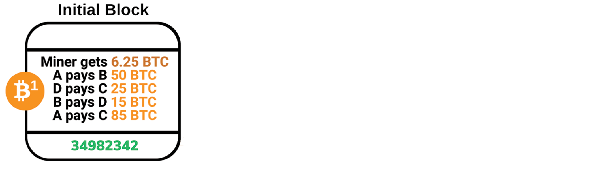
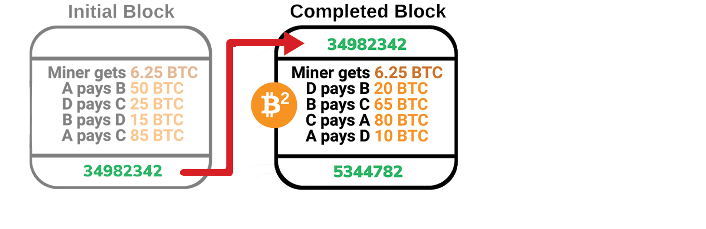
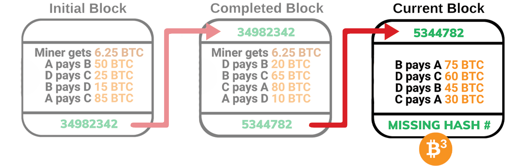
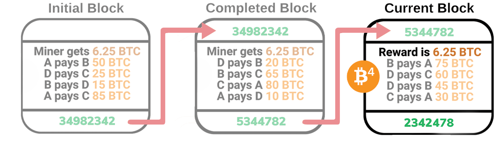

-
THE BLOCKCHAIN

Another word that describes the Blockchain could be a list of ledgers. It’s a history of all bitcoin transactions that have happened and everyone receives a copy of said history. Whenever a new transaction is made, that information is shared with everyone in the blockchain. Each transaction has a digital signature, meaning a payer is always aware of where their money is going.
-
CREATING A BLOCK

A block contains about 2,400 transactions. What makes a block valid is the hash(unique ID) connected to it, however the catch is that this hash value must be discovered. Using said hash to plug into a function called SHA256 will essentially convert the hash value back into the data of the transitions contained in the block, as well as the previous block’s hash value.
-
PROOF OF WORK

This is where a miner's duty comes into play. Through random number generation on their computers, they plug these random numbers into the SHA256, hoping that the data generated matches the hash of the block*. To generate the correct hash value takes time and energy, as such, a miner generating the said hash values “proves his work” with this effort.
-
BLOCK REWARD

The creation and validation of a new block creates new bitcoin that is rewarded to the miner. Those bitcoins are identified as part of the newly generated block. Currently, the reward is 6.25 bitcoin, that total gets cut in half about every 210,000 blocks created, or about every four years.
-
CYCLE REPETITION
After the new block has been created and validated, it is sent out to all of those who are part of the block chain so they can update their own personal copy of the data. Due to the nature of the generation of the block(as explained), it is almost always safe to trust the longest version of the chain being broadcasted.